FAMILY BACKGROUND
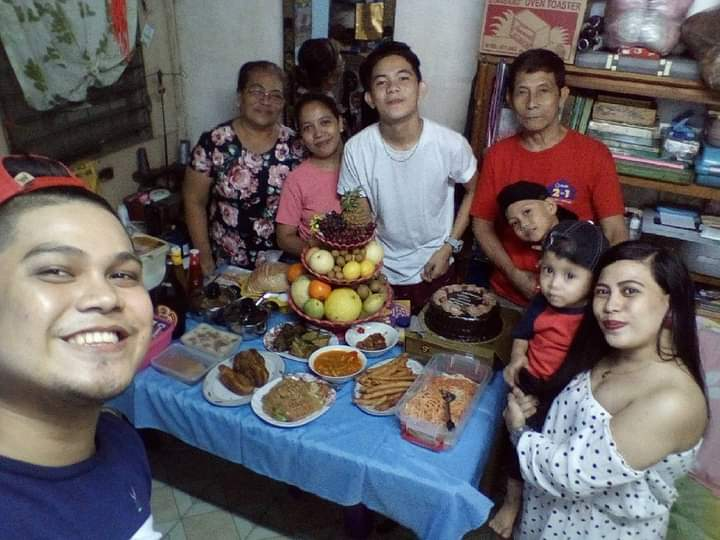
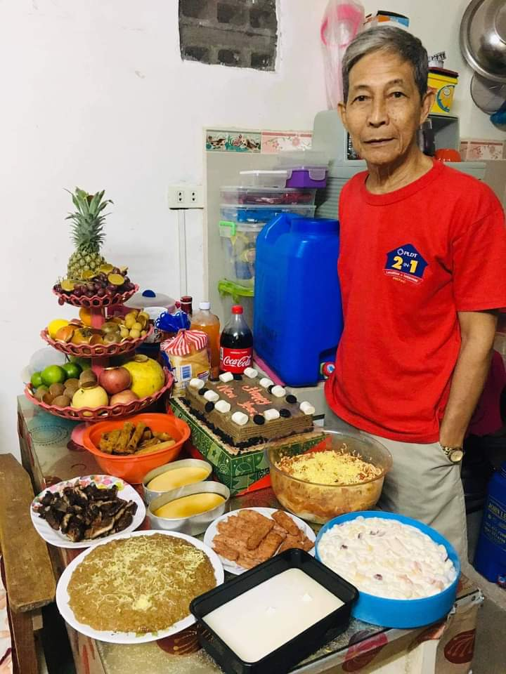
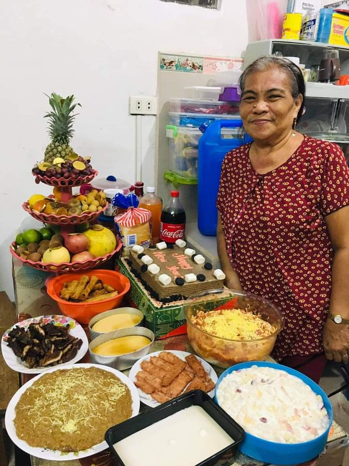
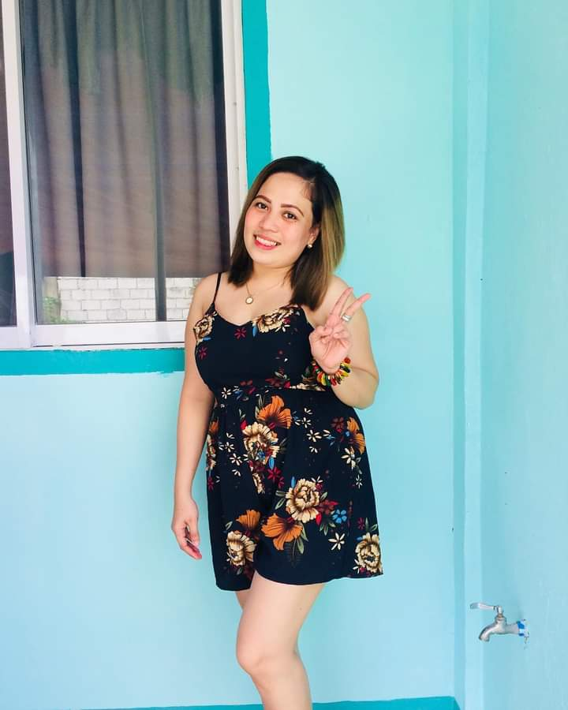
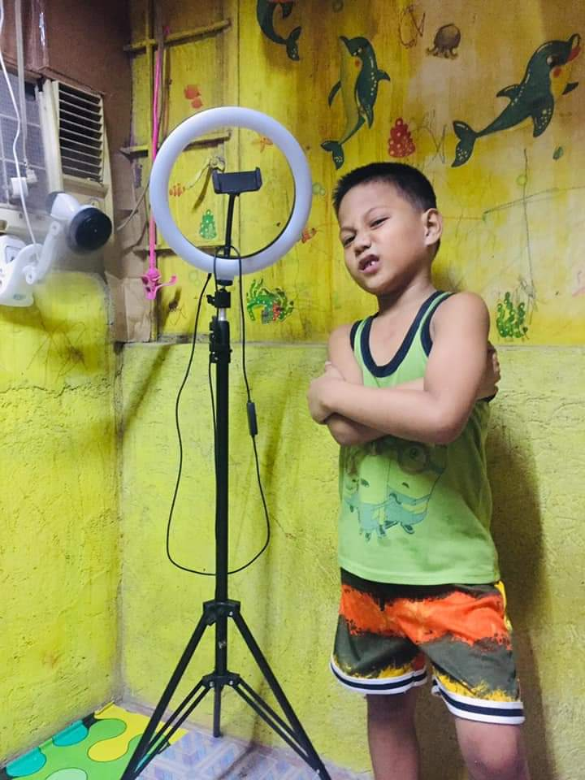
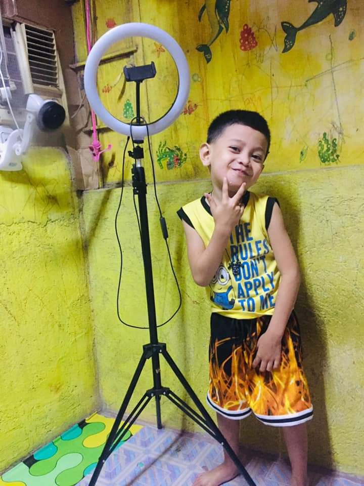
 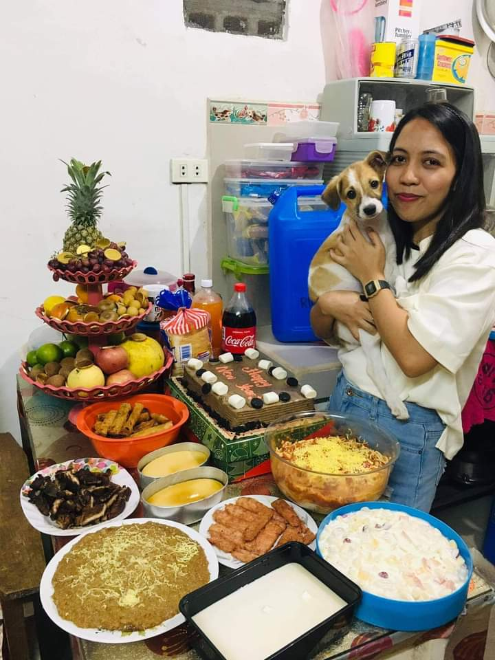
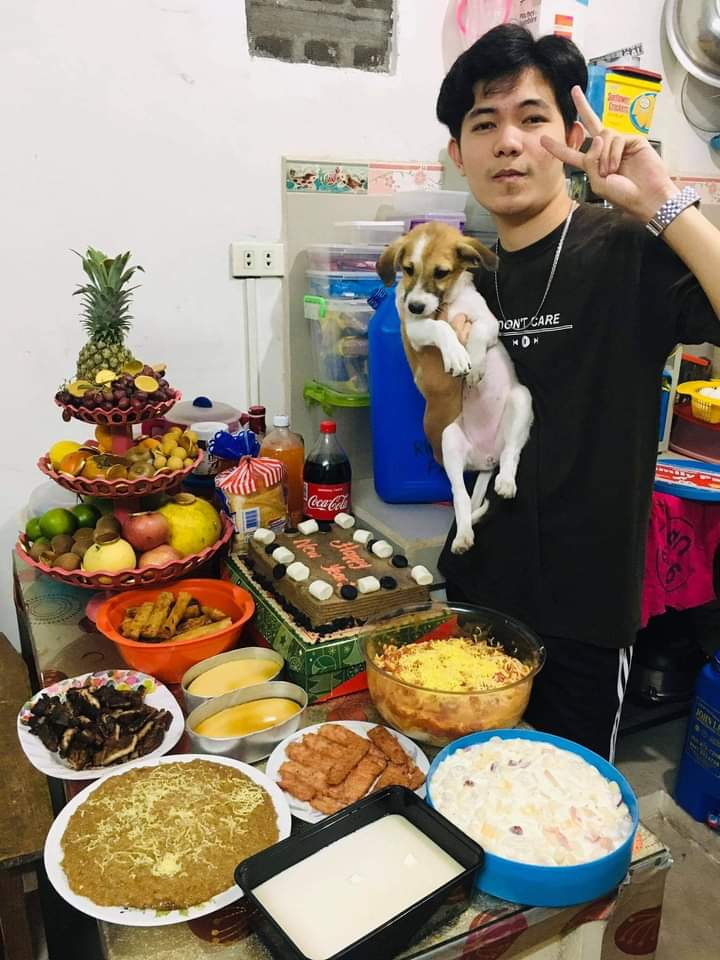
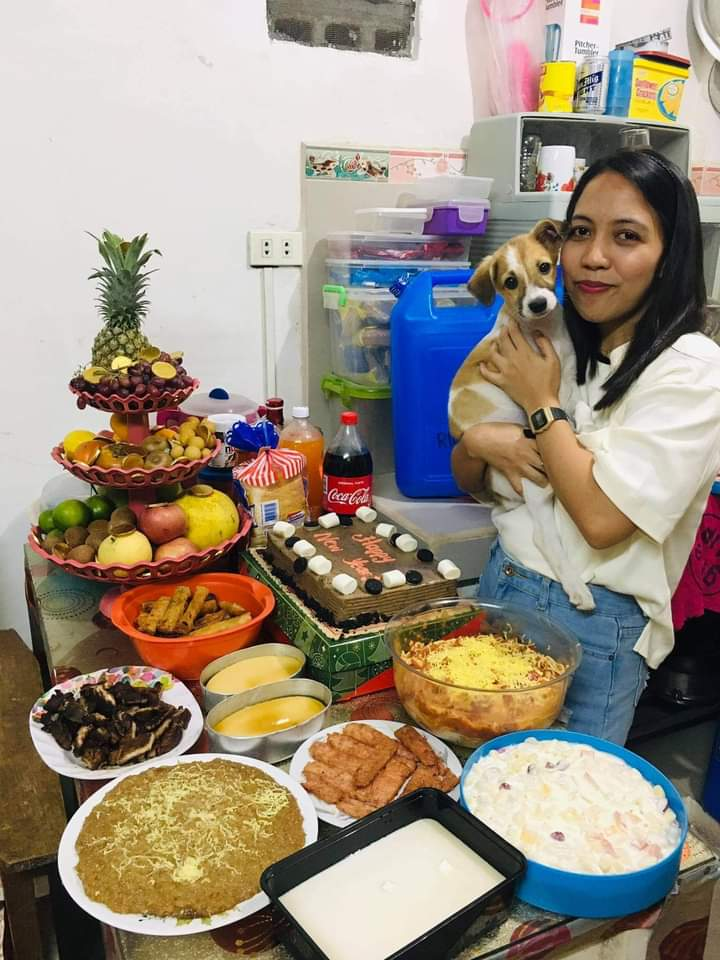
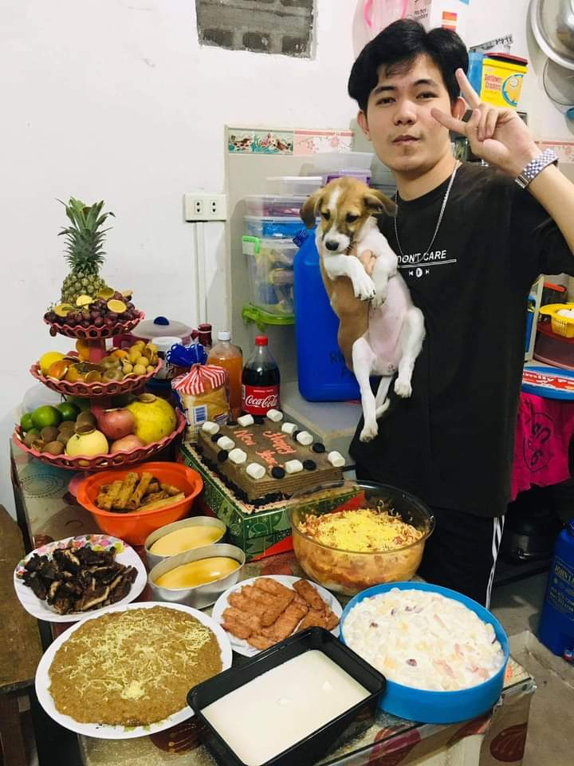
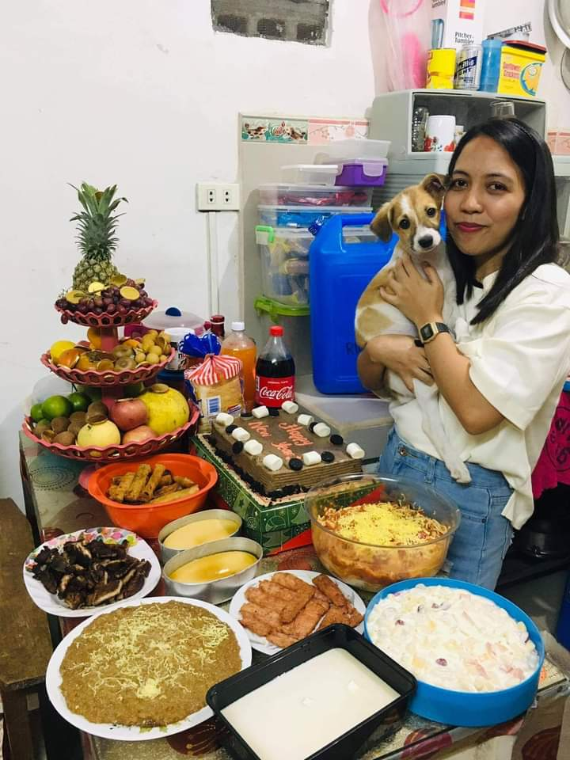
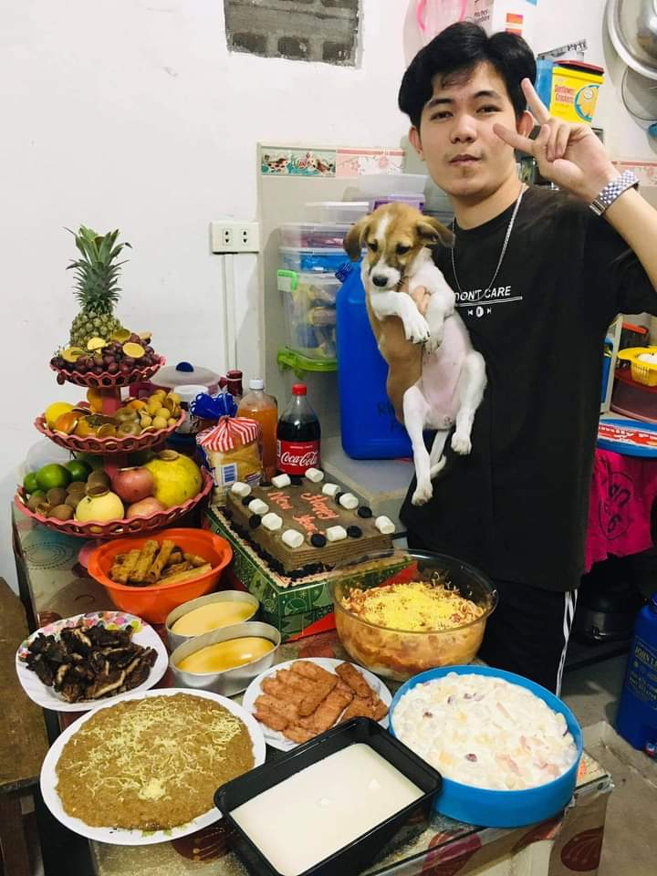
Father: Jorge C. Ricafrente Mother: Nora B. Ricafrente Oldest Sister: Jayzel B. Ricafrente Brother-in-Law: Arjay Calpis Nephew: Akhixean Nero R. Calpis Nephew: Akhizach Jazz R. Calpis Niece: Akeisha Daeneryz R. Calpis Sister: Jenny Rose B. Ricafrente Me: John Mark B. Ricafrente